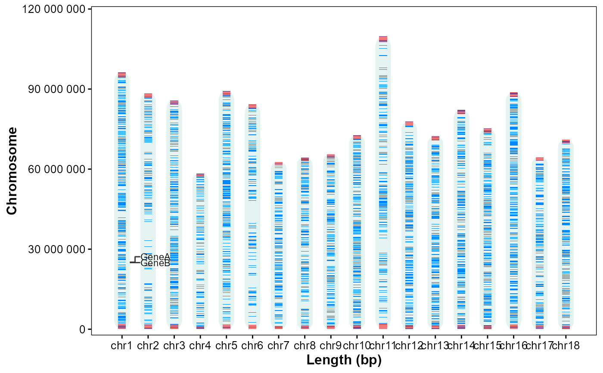
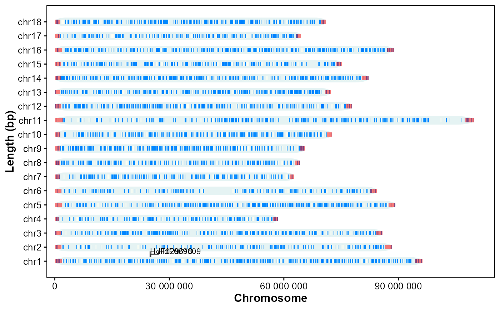

Plot chromosome structures and gene annotation.
Usage
plot_chrom_genes(
gff_file,
gene_table,
format = "auto",
annotate = "id",
orientation = "vertical",
bar_width = 0.6,
chrom_alpha = 0.1,
gene_width = 0.5,
chrom_color = "#008888",
gene_color = "#0088ff",
telomere_color = "#ff0000",
label_size = 3,
connector_dx1 = 0.2,
connector_dx2 = 0.2,
min_gap_frac = 0.02
)Arguments
- gff_file
Genomic structural annotation
GFF3/GTFfile path.- gene_table
A data.frame: first column gene ID, second column gene name.
- format
Format of GFF3/GTF file. ("auto", "gff3", "gtf").
- annotate
Which to annotate on the right: ("id", "name").
- orientation
Coordinate orientation: ("vertical", "horizontal").
- bar_width
Chromosome bars relative width. (0.6).
- chrom_alpha
Chromosome bars alpha. (0.1).
- gene_width
Gene bar relative width. (0.5).
- chrom_color
Chromosome bar color. ("#008888").
- gene_color
Gene rectangle color. ("#0088ff").
- telomere_color
Telomere color. ("#ff0000").
- label_size
Label text size. (3).
- connector_dx1
First connector horizontal offset. (0.15).
- connector_dx2
Second connector horizontal offset. (0.15).
- min_gap_frac
Minimum vertical gap between labels (fraction of chromosome length). (0.02).
Examples
# Example GFF3 file in GAnnoViz
gff_file <- system.file(
"extdata",
"example.gff",
package = "GAnnoViz")
genes <- data.frame(
gene_id = c("HdF029609", "HdF029610"),
gene_name = c("GeneA", "GeneB"))
# Vertical, annotate by name
plot_chrom_genes(
gff_file = gff_file,
gene_table = genes,
annotate = "name",
orientation = "vertical")
#> Import genomic features from the file as a GRanges object ...
#> OK
#> Prepare the 'metadata' data frame ...
#> OK
#> Make the TxDb object ...
#> OK

# Horizontal, annotate by id
plot_chrom_genes(
gff_file = gff_file,
gene_table = genes,
annotate = "id",
orientation = "horizontal")
#> Import genomic features from the file as a GRanges object ...
#> OK
#> Prepare the 'metadata' data frame ...
#> OK
#> Make the TxDb object ...
#> OK
#> Coordinate system already present.
#> ℹ Adding new coordinate system, which will replace the existing one.
